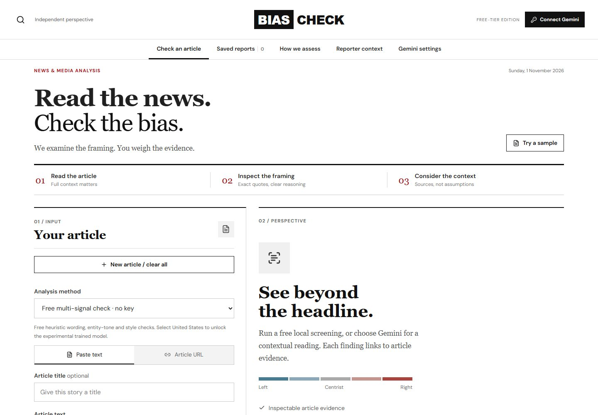

01 / News & Media
BiasCheck
News framing, inspected
Read the news, then check the bias. It surfaces political framing using exact article quotes and sourced reporter context, so you can judge the wording yourself.
- Quotes from the article, not summaries of it
- Reporter context with sources